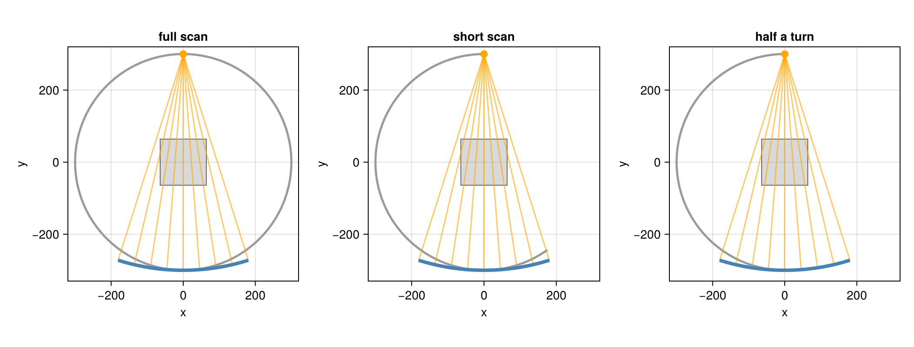
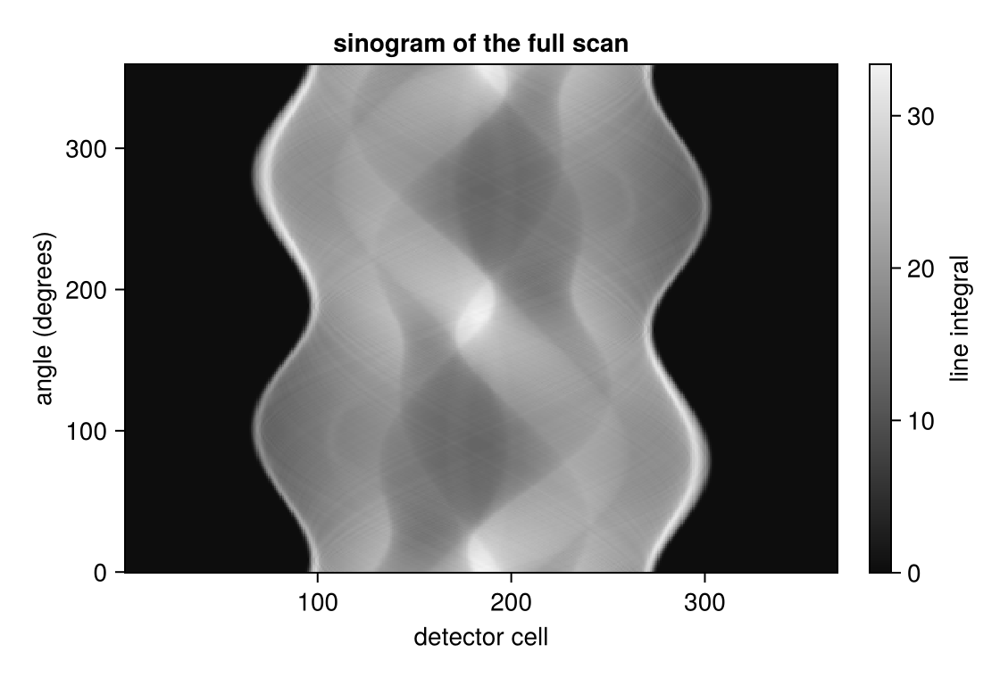
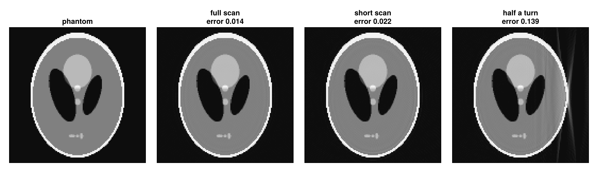

Fan Beam with a Curved Detector
A clinical CT scanner measures a slice with a fan of rays from a point source to a detector row curved on an arc about the source. This tutorial sets up such a scan and asks how far the scanner has to turn: a full turn, a short scan of half a turn plus the fan angle, or only half a turn.
using CTOperators, ImagePhantoms, RegularizedLeastSquares, LinearOperatorCollection, CairoMakie
using ImageGeoms: axisdepth_figure (generic function with 1 method)The slice: the Shepp-Logan phantom on 128 × 128 pixels of 1 mm.
n = 128
image = ImageGeom(; dims=(n, n), deltas=(1.0, 1.0))
x_true = Float32.(phantom(axis(image, 1), axis(image, 2), shepp_logan(SheppLoganToft(); fovs=(n, n)), 2));The scan
The source runs on a circle of radius dso = 300 mm; the detector row is an arc of radius dsd = 600 mm about the source. Its cells are 1 mm wide along the arc, an angle of 1/600 rad each. The fan has to cover the slice, whose corners are 64√2 ≈ 90.5 mm from the center: a half fan angle of asin(90.5 / 300), 368 cells. A fan beam is a cone beam with a single detector row, nv = 1; detector=:arc makes the row curved.
dso, dsd = 300.0, 600.0
gamma = asin(hypot(n / 2, n / 2) / dso) # half fan angle
nu = 2 * ceil(Int, gamma * dsd)
fan_beam(angles) = circular_cone_beam(; angles, dso, dsd, nu, nv=1, du=1.0, detector=:arc);Three scans with the same angular step, about one degree:
- a full scan, one turn;
- a short scan of half a turn plus the fan angle,
π + 2γ; - half a turn,
π.
step = 2pi / 360
full = fan_beam(range(0, 2pi, 361)[1:360])
short = fan_beam(range(0, pi + 2gamma, round(Int, (pi + 2gamma) / step) + 1))
half = fan_beam(range(0, pi, 181))
nviews(full), nviews(short), nviews(half)(360, 216, 181)From above: the source positions of all views (gray dots), and for the first view the source (orange), some of its rays and the curved detector (blue). The scans start with the source on the +y axis (at the top) and turn counterclockwise.

The data
The sinogram of the full scan. In a full turn every line through the slice is measured twice, once from each side: the ray at fan angle γ in the view at angle β and the ray at fan angle −γ in the view at angle β + π + 2γ.
op_full = JosephProjector(image, full)
y_full = op_full * x_true
How far to turn
A line through the slice is measured when the source passes one of the two points where the line crosses the source circle. In parallel beam half a turn sees every line; in a fan beam the rays of one view spread over the fan angle, and only half a turn plus the fan angle sees every line at least once. Reconstructions of the three scans with 30 CGNR iterations:
function reconstruct(geometry)
op = JosephProjector(image, geometry)
y = op * x_true
solver = createLinearSolver(CGNR, op; AHA=normalOperator(op), iterations=30)
reshape(solve!(solver, vec(y)), n, n)
end
x_full, x_short, x_half = reconstruct(full), reconstruct(short), reconstruct(half);
The short scan is as good as the full one: it measured every line, some twice. Half a turn misses lines near the edges of the fan, and the reconstruction shows streaks and wrong values on the side that was seen least.
Filtered back projection (FBP, available in Sinograms.jl; this package provides the projectors for iterative methods) must weight the doubly measured lines of a short scan by hand (Parker weights). An iterative method gets this right by itself, since it only asks for an image that matches all measured line integrals.
This page was generated using Literate.jl.